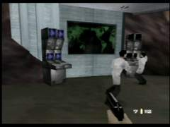
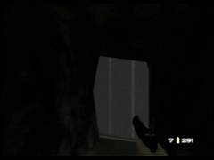
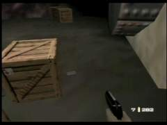
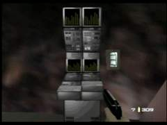
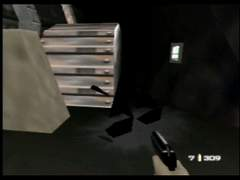
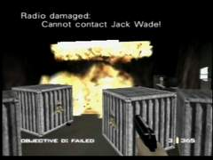

Un Niveau particulier, long, dur, sombre, avec une bonne Musique d'Ambiance. Un Truc pour vous aider : mémorisez bien ce Niveau, ça aide. Dès le Début, occupez-vous des Gardes. Nettoyez tout jusqu'a arriver devant des Scientifiques. Voilà votre 1er Objectif.
Détruire les Pompes Interieures : Secret Agent / 00 Agent
Faites fuir les Scientifiques, et explosez les 4 Ordinateurs de la Salle. Attention aux Gardes planqués, ils vous prunifieront. Continuez tranquillement votre chemin ensuite...


Arrivé en haut, liquidez bien tout le monde. Direction les Pompes Exterieures par un petit Passage Secret... Dès que vous marchez sur les Pontons Metalliques, descendez l'Escalier et prenez à gauche pour arriver à une Salle pleine de Caisses avec des munitions. Explosez les Casiers et faufilez-vous...


N'oubliez pas de ramasser la TONNE de Munitions qui sont dans les Caisses. Une fois dans le Passage Secret, lorsque vous détruirez les Casiers, vous serez dans la Salle des Pompes Exterieures.


Détruire les Pompes Exterieures : Secret Agent / 00 Agent
Dans cette Salle, tuez à distance grace à l'AR33 les Gardes qui arrivent alarmés par l'explosion des Casiers. L'un d'eux a une Carte ! Détruisez les 4 Ordinateurs et l'Objectif sera rempli...






Ressortez de la salle par le Sas à coté du Drone Gun, et faites bien le Ménage en n'oubliant aucun Garde VISIBLE. Les 2 Gardes que l'on voit ensuite ont tous les 2 une Carte indispensable ! L'un d'eux a égalemment un RCP-90 alors attention ! On peut les rameuter en shootant les Vitres à coté, c'est plus pratique !!


Détruire la Console Principale : Secret Agent / 00 Agent / Contacter Jack Wade par Radio : 00 Agent
Là c'est dur. Les 2 (Radio et Console) sont dans la meme Piece Minuscule. Si la Radio pete, c'est foutu. Si la Console pete, c'est gagné. Ce qu'il faut faire, c'est contacter Jack Wade par Radio, puis faire fuir les Scientifiques, puis tout faire sauter. Mais voilà, les Gardes sont abrutis et sortent des Grenades a tout bout de champ. Il faut donc y aller un par un avec le PP7 pour leur coller une balle entre les 2 yeux.


Minimiser les Pertes Scientifiques : Tous Niveaux
Ben faut pas en tuer trop, meme pas du tout. Dans la Salle de la Radio, vous trouverez une Grosse Porte. Entrez, et vous verrez une autre Porte sur la Gauche. Embarquez-vous dedans, tuez les Gardes, et préparez-vous au Couloir de la Mort. Y a 1 ou 2 Drone Guns suivant votre Difficulté. Sortez votre RCP-90, flinguez TOUT et tracez vers l'Ascenseur.